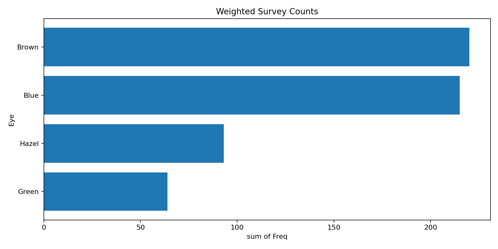

How are recorded respondents distributed by eye colour?
The largest observed sum of Freq is 220.000 for Brown. This ranking is descriptive, not a recommendation.

| segment | rows_used | metric | minimum | maximum |
|---|---|---|---|---|
| Blue | 8 | 215 | 7 | 64 |
| Brown | 8 | 220 | 3 | 66 |
| Green | 8 | 64 | 2 | 15 |
| Hazel | 8 | 93 | 5 | 29 |
Rows are contingency-table cells; use frequency weights, never row counts as respondent counts.
Retain weights when cross-tabulating hair colour and sex.